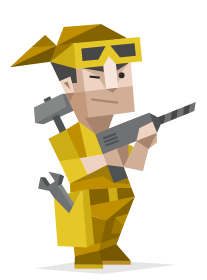
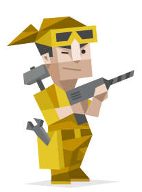
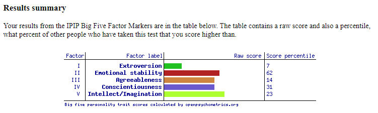

Personal Profile
Myers Briggs
 

Learning Style

Big 5 Personality Test

Q1 - What do the results of these tests mean for you?
Q2 - How do you think these results may influence your behaviour in a team?
Q3 - How should you take this into account when forming a team?
A1 - The Virtuoso personality type is described as being rationalised, curious makers who
prefer pulling things apart in order to put them back together, usually better than it was before.
They are known as friendly, private curious, overhast and practically realistic.
As for me, this does seem very similar to who I am.
A2 - Based on these results and personal experience, in a team I would hastily find answers on my own, try to get the goal done quickly, identify roles, mainly speak up about goal related topics, and maybe send a meme or two after i've done my part.
A3 - Keeping this in mind, when forming a team finding people who are best able to handle/deal with conflicts, identify roles fairly, or are able to keep up with my "work rush" would be the beneficial choice.